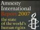

|
|
|
Browsing
Contact Us |
Campaigners |
Face to Face |
Tribune |
Interview |
News |
On the Web |
One Million |
Report
Farsi | Français | German | Italian | Spanish | العربية Also in this section
|
 Amnesty International Letter to Head of Judiciary: Iran: Intensification of repression of women’s rights activistsSaturday 1 November 2008 AMNESTY INTERNATIONAL PUBLIC STATEMENT AI Index: MDE 13/159/2008 31 October 2008 Iran: Intensification of repression of women’s rights activists In a letter addressed to the Head of the Judiciary in Iran, Amnesty International deplored the latest arrest of a woman’s rights activist and the continuing harassment of others who were prevented from leaving the country. The organization called on the Iranian authorities to lift the travel bans and to end the harassment of women’s rights activists. In recent weeks there has been a crackdown on members of the Campaign for Equality, a grass-roots initiative to end legal discrimination against women in Iran. The Campaign informs women of their rights, and is aiming to collect one million signatures from the Iranian public for a petition against discriminatory laws. Over the last weeks, the Iranian authorities have heightened their harassment of women’s rights activists and members of the Campaign for Equality and continued to threaten activists with imprisonment as a number have been summoned to court for their peaceful activities relating to the Campaign for Equality. The authorities have also increasingly resorted to the use of travel bans, in addition to arrests and prosecutions, to harass and disrupt the activities of women’s rights activists and other human rights defenders. Such travel bans are contrary to the freedom of movement enshrined in Article 12 of the International Covenant on Civil and Political Rights, to which Iran is a state party. Travel bans have been imposed on Parvin Ardalan, Mansoureh Shoja’i and Tal’at Taqinia, all members of the women’s movement, and at least five other civil society activists. Esha Momeni, an Iranian-American graduate, supporter of the Campaign for Equality in Iran and student at the University of California, has been detained without access to her family or a lawyer since she was arrested by security officials on 15 October 2008 and is now held in Section 209 of Tehran’s Evin Prison, which is run by Ministry of Intelligence officials. She was stopped while driving in Tehran by officials who told her they were traffic police but who then took her to her family home and searched it, taking away videotape of interviews she had conducted with members of the Campaign for Equality in Iran as part of a university project. A spokesman for the Ministry of Foreign Affairs acknowledged her arrest but stated that “the relevant bodies are pursuing her case and their legal measures. We have not been informed of anything final”. Two other activists in the Campaign for Equality, Sussan Tahmasebi and Parastoo Alahyaari, have recently been summoned to appear before the Revolutionary Court and questioned about their activities. They have both had their homes searched and some of their private possessions seized, including their laptops and materials relating to the Campaign for Equality. Sussan Tahmasebi was prevented from leaving the country on an international flight on 26 October 2008 by security officials at Tehran’s Imam Khomeini airport, who also confiscated her passport. Her home was searched the same day, following which she was served with a summons, dated from a month ago, requiring her to appear for questioning before Branch 1 of the Revolutionary Court. She did so on 29 October, where she was interrogated by Ministry of Intelligence officials without the presence of her lawyer and told that she would need to appear again before the court early next month. Parastoo Alahyaari and other women’s rights activists who had gathered peacefully in Laleh Park in Tehran on 17 October 2008 were ordered by police to disperse. The day after Parastoo Alahyaari had her home searched by security officials and was then summoned to appear immediately before the Revolutionary Court. She was questioned and then allowed to go subject to further questioning The case against four other women’s rights activists - Nahid Keshavarz, Mahboubeh Hosein Zadeh, Saaideh Amin and Sarah Aminian – who were taken to court last year for collecting signatures in support of the Campaign in 2007 in Laleh Park, was due to resume on 27 October 2008 but has now again been postponed until next January. The threat of possible imprisonment continues to hang over the four, although their lawyer, Nasrin Sotoudeh, commented: “I am hopeful, as collecting signatures is not a crime according to the law, my clients will be acquitted.” In its letter to the Head of the Judiciary, Ayatollah Hashemi Shahroudi, Amnesty International called for immediate clarification of the reasons for the detention of Esha Momeni and for her to be released if she has been detained for her peaceful activities in support of the Campaign for Equality. It also asked for the reasons for the actions taken against Sussan Tahmasebi and Parastoo Alahyar and called for all travel bans imposed on account of the peaceful exercise of the right to freedom of expression and association, or in order to limit such peaceful exercise, to be lifted immediately and for passports confiscated from human rights activists to be returned to them. Amnesty International fears that these recent incidents are part of a systematic pattern of harassment and intimidation of peaceful human rights activists by the Iranian authorities. Background Women’s rights defenders’ tireless campaigning has succeeded in stirring debate about discrimination against women at all levels of society – among women themselves, in the press and even among the religious establishment. However, the Iranian authorities appear to be paying little attention to these legitimate demands of Iranian women. Most recently, the United Nations Secretary General expressed concerns in a 20 October 2008 report at “an increasing crackdown in the past year on the women’s rights movement” and that “women’s rights activism is sometimes presented by the Iranian government as being connected to external security threats to the country. For instance, the main organizers of the “one million signatures” campaign reportedly faced arrest and intimidation by the authorities.” See Iran: Women’s rights defenders defy repression, published on 28 February 2008 at: Also see Iran: Arbitrary detention/ fear of torture or other ill-treatment: Esha Momeni (f) at: http://www.amnesty.org/en/library/info/MDE13/155/2008/en |